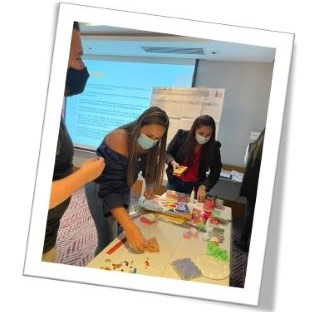
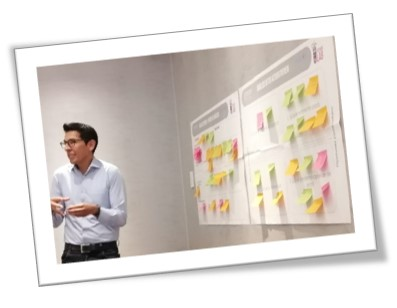
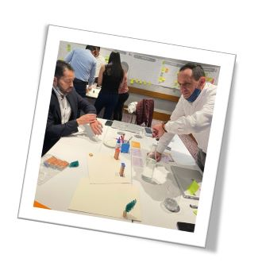
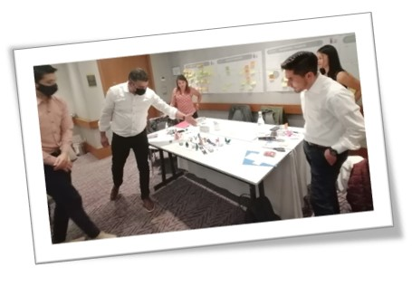
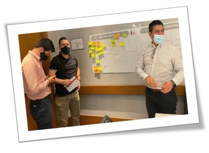

Responsable: Paola Andrea Ayala

Resultados Clave Q1
RC1: Identificar las necesidades de comunicaciones de VPO para generar un primer diagnostico de necesidades
RC2: Diagnostico de necesidades de comunicación de la VPO
RC3: Conformar el equipo de comunicaciones y su fortalecer formación
RC4: Definición del consejo de comunicaciones.
Resultados Clave Q2
RC1: Definición del alcance de comunicaciones priorizadas, los canales que se van a utilizar y la medición.
RC2: Definicion de recursos de las necesidades priorizadas.
Resultados Clave Q3
RC1: Implementar modelo de comunicaciones internas priorizadas de la VPO y su primera medición.
RC2: Implementar modelo de comunicaciones, de proyectos internos priorizados de la VPO, y su primera medición.
Resultados Clave Q4
RC1: Evaluación el impacto, cobertura y experiencia en el cliente interno, e implementación de nuevas priorizaciones (barridos).
Responsable: Juan Camilo Tovar

Resultados Clave Q1
RC1: Identificar procesos, canales y el alcance para los procesos que puedan ser implementados por canales de autogestión en cada Dirección.
RC2: Definir mínimo 1 proceso o procesos para implementación de acuerdo con impacto en transacciones, costo y experiencia al afiliado.
RC3: Generar las mesas de trabajo necesarias con la Dirección de Experiencia digital y áreas involucradas para entendimiento de la necesidad.
Resultados Clave Q2
RC1: Generar y radicar 1 documento donde se especifique el requerimiento para implementación del canal(es) de autogestión (Condiciones de proceso y negocio)
RC2: Generar 1 ANS donde se especifiquen con la DEG tiempos entrega, pruebas y puesta en producción.
RC3: Establecer cronograma de acuerdo a proyectos nuevos o en curso.
Resultados Clave Q3
RC1: Implementación del proceso o procesos a través del canal de autogestión.
Resultados Clave Q4
RC1: Medición del impacto y inicio de nuevo ciclo de evaluación e implementación.
Responsable: Arnol Romero

Resultados Clave Q1
RC1: Realizar el diagnóstico con el 100% de los procesos de generación de información a clientes externos (informes generados desde las áreas de la vicepresidencia) por parte de cada una de las direcciones.
RC2: Tener definida la información que puede llevarse a automatización (medio digital) y la forma de lograrlo, Indentificado las fuentes de información usadas para la generación de información.
RC3: Tener constituido el grupo de apoyo en la construcción de iniciativas.
RC4: Realizar el diagnóstico con el 100% de los informes que se entregan a la Vicepresidencia (vicepresidente) y los que son de seguimiento de las direcciones.
Resultados Clave Q2
RC1: Tener aprobado el modelo de entrega de información (medio digital) a clientes externos, el cual incluirá información consolidada y detalles (BI o modelo de publicación y seguimiento).
RC2: Tener identificados los procesos de generación de información que se pueden ejecutar a partir de lo que ya se ha creado en torno a BI y otras fuentes.
RC3: Tener aprobado el modelo de entrega de información (medio digital) a vicepresidencia y a las direcciones, el cual incluirá información consolidada y detalles (BI o modelo de publicación y seguimiento).
RC4: Entregar inventario y priorización de los procesos de generación de información que se pueden ejecutar a partir de lo que ya se ha creado en torno a BI y otras fuentes.
Resultados Clave Q3
RC1: Tener radicado el requerimiento que contempla la solución al área de tecnología.
RC2: Tener implementados los dos informes de mayor priorización (junto con sus detalles si así se requiere).
RC3: Haber radicado el requerimiento y realizado las reuniones de entendimiento respecto la información que se deberá generar para la completitud del medio digital diseñado.
RC4: Tener implementados los 5 informes de mayor priorización(junto con sus detalles si así se requiere).
Resultados Clave Q4
RC1: Haber realizado la segunda mesa de trabajo con el área de Tecnología sobre el entendimiento de la solución tecnológica.
RC2: Tener implementados los dos procesos que siguen de acuerdo a escala de priorización.
RC3: 3:Tener implementados los dos procesos que siguen de acuerdo a escala de priorización, manteniendo el modelo (medio digital) definido.
Responsable: Seird Nuñez

Resultados Clave Q1
RC1: Identificar con cada Dirección de la VPO las necesidades frente a las redes de apoyo de cada proceso, (febrero 2022)
RC2: Definición de los integrantes que serán parte del equipo facilitador (febrero 2022).
RC3: Definición de los segmentos y productos a trabajar, empleadores, entes territoriales, afiliados, IPS, etc (marzo 2022).
RC4: Diseño y aplicación de encuesta de las necesidades de aportantes y ejecutivos.
Resultados Clave Q2
RC1: Establecer los canales de comunicación, a través de la Líder de VOP (Abril 2022).
RC2: Definición de informes o procesos que requieren la intervención del facilitador para el seguimiento , medios de comunicación y/o publicación, innovación y digital. ( Abril ).
RC3: Definición de plataforma como mesa de servicios, atención Integral de los procesos, aclaraciones y dudas.
RC4: Capacitación cambios de norma. (abril ) sistemático.
Resultados Clave Q3
RC1: Entrevista con cliente interno diferente a la VPO evaluando las necesidades (marzo 2022).
RC2: Implementación servicios y/o procesos a disposición del cliente Externo 50% de implementación.
RC3: Evaluación y seguimiento del proceso, (agosto).
Resultados Clave Q4
RC1: Evaluación del objetivo con el equipo de trabajo (noviembre).
RC2: Definición de nuevos productos a incluir próxima vigencia.
RC3: 3:Tener implementados los dos procesos que siguen de acuerdo a escala de priorización, manteniendo el modelo (medio digital) definido.
Responsable: Jesus Eduardo Atará

Resultados Clave Q1
RC1: Análisis de los resultados de la campaña de socialización a la VOP.
RC2: Definición de perfiles, para la inscripción de posibles integrantes.
RC3: Selección de 2 integrantes de cada Dirección para conformar el grupo interdisciplinario.
Resultados Clave Q2
RC1: Selección de 5 ideas de la VOP.
RC2: Ideas clasificadas por nivel de complejidad.
RC3: Informe de Ideas recibidas.
RC4: 4:Entrega de las ideas a ejecutar a los lideres de cada proceso.
Resultados Clave Q3
RC1: Entregar el 100% de las iniciativas con los hitos para su ejecución.
RC2: Lograr un 40% de avance en las actividades planeada.
RC3: Entrega de informe con avance a las iniciativas.
RC4: Informe de necesidades de recursos, humano tecnológico, económico.
Resultados Clave Q4
RC1: Puesta en producción de dos iniciativas a corto plazo, de acuerdo con la evaluación de los hitos.
RC2: Seguimiento del 60% pendiente del cronograma de actividades de mediano y largo plazo, con un cumplimiento del 20%. .